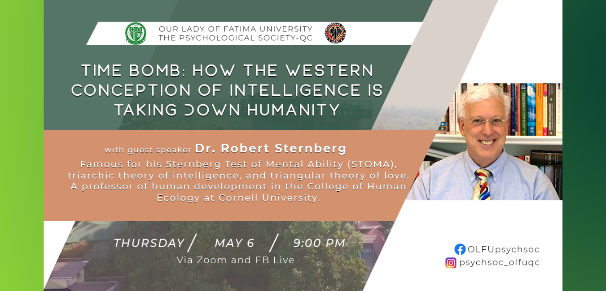

May 06, 2021
Renowned psychologist Dr. Robert Sternberg was the honored speaker in the webinar, "Time Bomb: How the Western Conception of Intelligence is Taking Down Humanity". Held on 06 May 2021, the conference was an initiative of the student organization, the Psychology Society, based in the Quezon City Campus of Our Lady of Fatima University (OLFU).
A professor of human development at Cornell University, Dr. Sternberg is famous for the Sternberg Test of Mental Ability (STOMA), the triarchic theory of intelligence, and the triangular theory of love.
Formally opening the program, OLFU President Dr. Caroline Marian Enriquez expressed excited anticipation in learning from Dr. Sternberg, and underscored how opportune the event was, considering the present circumstances brought about by the pandemic. “We view this webinar as very timely considering the current times where we all have to make our adjustments and we have to find out in our own ways how we could be more resilient and adapt to the changes of the times,” Dr. Enriquez averred.
Dr. Sternberg began his talk by specifying some known man-made "disasters," and all of these have one thing in common: "They are a result, directly or indirectly, of 'intelligence' as conceptualized in the West." He proceeded to discuss the advantages of having a high intelligence quotient or IQ." IQ predicts lots of shorter- and longer-term individual successes. But even long- term success for the individual is short-term for humanity-it has produced a tragedy of the commons," he argued in his presentation. "We rely on collective intelligence," Dr. Sternberg said.
"By focusing on individual intelligence, we lose sight of the importance of collective intelligence." According to him, "failure to take into account collective intelligence magnifies the effects of IQ + knowledge, both constructive and destructive," hence his examples of disasters. He also underscored how the effects of this problem will radiate to the next generations.
Moving on to standardized academic testing, Dr. Sternberg led an extensive discussion on the elements of "an Augmented and Adaptive View of "Successful Intelligence' which he argued. These are: Creativity, Common Sense, and Wisdom, in addition to Domain- general Analytical Skills and Domain-specific Analytical Skills. He also detailed how these were measured in his studies with fellow academics. "Standardized tests, based on modern Western notions of intelligence, are seriously limited and narrow because modern Western notions of intelligence are seriously limited and narrow," Dr. Sternberg pointed out.
In relation to this, he identified reasons why psychometric testing remained in the olden thought. As a conclusion, he said, "What we need in identifying students as smart, as gifted is not transactionally smart people." "We need people who want to transform the world to make it a better place, who want to make a difference. So let's make the world a better place!"
Participants of the webinar also had an opportunity to ask questions and exchange insights with Dr. Sternberg. Topics talked about include tacit knowledge and practical intelligence, change in the educational system, and practical intelligence in finding solutions to the pandemic.
Rise to the top!